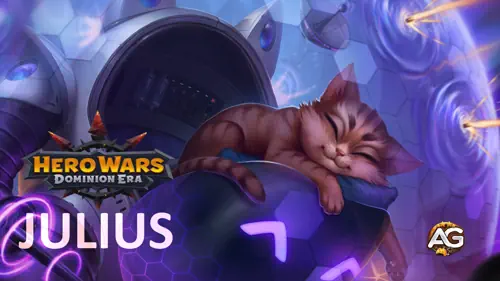
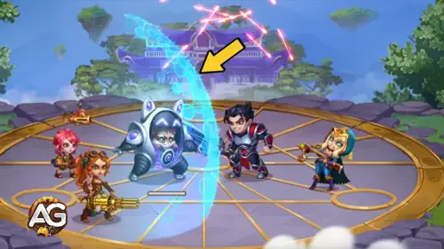
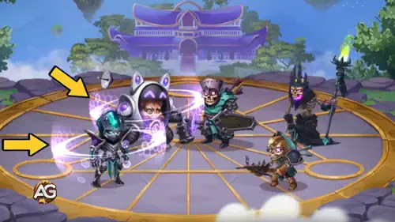
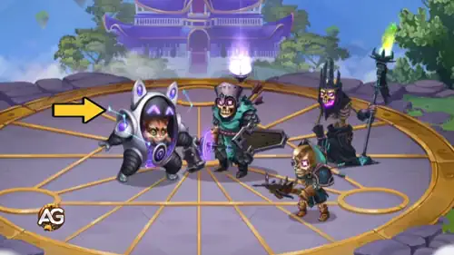
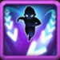
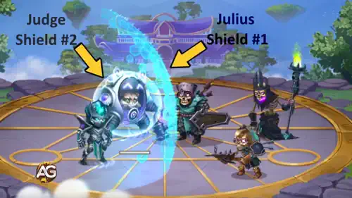
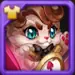
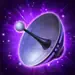

Guía de Julius – El tanque viajero estelar en Hero Wars: Dominion Era
- Por: Alexandre Domingos. .
¿Buscas un tanque que sea adorable y letal a la vez? Julius, el gato espacial con armadura mecánica, podría ser el defensor definitivo de la primera línea de tu equipo.
En esta guía, analizaremos las habilidades, los atributos y las sinergias de Julius para ayudarte a dominar a este felino cósmico e infundir miedo a tus enemigos, un ronroneo a la vez.

¿Quién es Julius?
Julius es un héroe tanque de primera línea en Hero Wars: Dominion Era, conocido por su armadura mecánica, sus habilidades protectoras y su sorprendente utilidad.
- Clase: Tanque
- Posición: Primera línea
- Atributo principal: Fuerza
Originario de un planeta lejano cuya estrella es invisible desde los cielos de Dominion, Julius aterrizó de forma accidentada en este mundo con valentía, inteligencia y un meca de combate que él mismo construyó.
Su aspecto adorable esconde a un genio del combate: Julius puede eliminar efectos negativos, aumentar la velocidad del equipo e incluso curar. Combina especialmente bien con héroes que aplican escudos, como Aidan y Fafnir, y hace maravillas cuando recibe la bonificación de ataque físico de Nebula.
Ventajas y desventajas de Julius - Hero Wars: Web y Facebook
✅ Ventajas
- Excelente tanque con poderosos escudos que absorben todo el daño para el equipo entero.
- Mejora considerablemente con el ataque físico, lo que hace que sus escudos y su curación sean más potentes con el tiempo.
- Elimina efectos negativos y aumenta la armadura y la defensa mágica después de que se rompan los escudos.
- Gran sinergia con héroes que aplican escudos (Fafnir, Jorgen, Aidan) y con Nebula para aumentar aún más el daño.
- Resiste los efectos de control mientras los escudos están activos, lo que mejora la estabilidad del equipo.
❌ Desventajas
- Es vulnerable antes de que se active el primer escudo y puede ser eliminado con daño explosivo al principio de la batalla.
- No inflige un daño significativo por sí solo; depende mucho del apoyo del equipo.
- Es débil frente a héroes que impiden obtener energía, como Jorgen, que retrasan el uso de sus habilidades.
- Requiere invertir en ataque físico y atributos de supervivencia para ser eficaz.
- Las mecánicas de escudo son menos eficaces contra enemigos con daño verdadero o habilidades contra escudos.
Prioridad de mejora de las habilidades de Julius - Hero Wars: Dominion Era
Descubre qué habilidades de Julius debes mejorar primero para proteger a tu equipo y maximizar su apoyo basado en escudos durante la batalla.
Miautrix defensiva
Esta es la habilidad principal de Julius. Crea un enorme escudo para todo el equipo que absorbe daño y, después de romperse, cura a todos los aliados. Cuanto más ataque físico tenga Julius, más potentes serán este escudo y su curación.
Prioridad de evolución: Muy alta – Protege a todo el equipo y lo cura, por lo que mejorarla aumenta la supervivencia de todos.

Dispositivo imitador
Esta habilidad protege a Julius con un escudo y, si el escudo resiste durante 5 segundos, copia la cantidad restante a todos los aliados. Cada vez que Julius recibe un escudo, obtiene un aumento permanente de ataque físico durante el resto del combate.
Prioridad de evolución: Alta – Habilidad de gran sinergia que mejora la protección del equipo y aumenta el daño de Julius con el tiempo.

Motor de nueve vidas
Esta habilidad pasiva se activa cada vez que un aliado pierde un escudo. Elimina los efectos negativos y aumenta temporalmente su armadura y su defensa mágica. Ayuda a mantener al equipo a salvo incluso después de que se rompan los escudos.
Prioridad de evolución: Media-alta – Ayuda a eliminar efectos negativos y añade un pequeño aumento de defensa, pero no tiene tanto impacto como sus habilidades principales de escudo.


Reflejos ronronperfectos
Esta habilidad otorga velocidad adicional a todo tu equipo por cada escudo activo en el campo de batalla. Los ataques y las habilidades más rápidos pueden ayudarte a ganar antes, pero la bonificación es pequeña a menos que haya muchos escudos activos.
Prioridad de evolución: Media – Es útil cuando hay muchos escudos en juego, pero no funciona bien en todas las situaciones. Mejórala al final.

Mejor patronazgo para Julius
Descubre qué mascota proporciona a Julius la mayor protección y sinergia para sus escudos y habilidades de apoyo al equipo en Hero Wars: Dominion Era.
1.er puesto:

Axel
Axel ofrece una protección excepcional al distribuir el daño recibido. Para Julius, esto hace que su función de tanque basada en escudos sea mucho más eficaz, especialmente porque Axel impide que los grandes ataques de daño explosivo superen sus defensas. Combinado con aumentos de armadura y ataque mágico, Axel mantiene a Julius con vida durante más tiempo y potencia sus escudos para todo el equipo.
2.º puesto:

Oliver aumenta la supervivencia de Julius al curarlo cuando cae por debajo del 50% de salud. Como Julius suele recibir daño en primera línea mientras protege a sus aliados con escudos, Oliver garantiza que permanezca vivo durante más tiempo para seguir apoyando al equipo. La salud y la armadura adicionales refuerzan aún más su función como tanque resistente de primera línea.
3.er puesto:

Biscuit aporta utilidad al reducir la curación enemiga. Aunque no es la mejor opción para la supervivencia personal o los escudos de Julius, resulta útil en enfrentamientos específicos contra equipos con mucha curación. La bonificación de ataque mágico y armadura sigue siendo útil, pero Biscuit destaca más en composiciones de apoyo y control que en una sinergia puramente centrada en la función de tanque.
Mejor aspecto para Julius en Hero Wars: Dominion Era
Descubre qué aspectos de Julius proporcionan los aumentos de atributos más eficaces para sus escudos, su curación y su función de tanque en Hero Wars: Dominion Era.
Aspecto predeterminado – Fuerza +1.365
Este aspecto aumenta la Fuerza, el atributo principal de Julius. La Fuerza aumenta tanto su salud como su ataque físico, lo que potencia directamente la capacidad de sus escudos y la cantidad de curación. Mejora todas las habilidades de Julius de forma pasiva.
Prioridad de evolución: Muy alta – La mejor mejora general. Aumenta la potencia de los escudos, la curación, la supervivencia y el ataque físico mediante el aumento del atributo principal.

Aspecto romántico – Ataque físico +7.095
Este aspecto aumenta directamente el ataque físico de Julius, lo que potencia sus escudos, su curación y algunos efectos de sus habilidades. Es ideal si ya has mejorado sus atributos principales y quieres un gran aumento en el rendimiento de sus escudos.
Prioridad de evolución: Alta – Excelente para mejorar directamente los efectos de las habilidades. Conviene usarlo después de subir de nivel el aspecto del atributo principal.
Aspecto demoníaco – Salud +106.645
Este aspecto otorga a Julius un enorme aumento de salud. Mejora su supervivencia, pero no afecta directamente a la potencia de sus escudos o su curación. Es útil en batallas muy largas en las que mantenerse vivo es la máxima prioridad.
Prioridad de evolución: Media-alta – Añade resistencia como tanque, pero tiene menos impacto en la eficacia de las habilidades que los aumentos de Fuerza o Ataque físico.
Aspecto de mascarada – Defensa mágica +10.650
Este aspecto aumenta la defensa mágica de Julius. Aunque puede ser útil en determinadas situaciones contra equipos con mucho daño mágico, no potencia sus escudos ni sus habilidades. Es el que menos impacto tiene en la mayoría de las composiciones generales de equipo.
Prioridad de evolución: Baja – Situacional. Solo es útil contra equipos de daño mágico y no afecta al rendimiento de las habilidades.
Prioridad de evolución de los artefactos de Julius en Hero Wars: Dominion Era
Descubre el mejor orden de mejora de los artefactos de Julius para maximizar su supervivencia, la potencia de sus escudos y su apoyo al equipo en Hero Wars: Dominion Era.

Arma: Antena gatelital
Esta arma activa la habilidad de artefacto de Julius al comienzo de la batalla y proporciona probabilidad de golpe crítico. Aunque Julius no depende de los críticos, la activación beneficia a todo el equipo, siempre que Julius siga vivo cuando se produzca.
Prioridad de evolución: Media-alta – Valiosa para apoyar al equipo, pero menos útil si Julius carece de resistencia. Mejórala después de asegurar su supervivencia.

Libro: Código del guerrero
Este artefacto otorga a Julius ataque físico y probabilidad de golpe crítico. Aunque ayuda a potenciar los efectos de escudo y curación, no mejora su salud, por lo que es el menos esencial para su función de tanque de primera línea.
Prioridad de evolución: Media – Potencia ligeramente el efecto de las habilidades, pero no ofrece defensa. Mejóralo solo después del Anillo y el Arma.

Anillo: Anillo de fuerza
Este artefacto aumenta el atributo principal de Julius, la Fuerza, y le otorga tanto ataque físico como un gran aumento de salud (+249.960 puntos de salud). Esto es esencial para un tanque de primera línea, ya que le ayuda a sobrevivir más tiempo mientras potencia todas sus habilidades de escudo y curación.
Prioridad de evolución: Muy alta – Aumenta tanto la supervivencia como la potencia de las habilidades. Si Julius muere, no puede proteger al equipo; empieza por aquí.
Prioridad de evolución de los glifos de Julius
Explora el mejor orden de mejora de los glifos de Julius para aumentar la potencia de sus escudos, su supervivencia y su eficacia en primera línea en Hero Wars: Dominion Era.

1.er glifo – Ataque físico
Este glifo aumenta directamente la potencia de los escudos y las habilidades de curación de Julius, ya que todas sus habilidades principales mejoran en función del ataque físico. Tiene un impacto inmediato y visible en su rendimiento en batalla.
Prioridad de evolución: Muy alta – Mejora todas las habilidades de escudo y apoyo. Máxima prioridad para aumentar la utilidad y la protección.

2.º glifo – Salud
La salud hace que Julius sea más resistente como tanque de primera línea. Cuantos más puntos de salud tenga, más tiempo sobrevivirá para proteger a sus aliados y seguir activando escudos.
Prioridad de evolución: Alta – Gran aumento de supervivencia. Ayuda a Julius a mantenerse vivo para cumplir su función en batallas largas.

3.er glifo – Probabilidad de golpe crítico
Aunque Julius puede asestar golpes críticos ocasionalmente, sus habilidades no dependen de la probabilidad de crítico. Este glifo es útil sobre todo si estás creando una composición ofensiva o híbrida con bonificaciones que aumentan en función de los críticos.
Prioridad de evolución: Media – Mejora opcional para composiciones de equipo agresivas, pero no es necesaria para configuraciones centradas en escudos.

4.º glifo – Armadura
La armadura reduce el daño físico recibido. Aunque es útil, Julius ya tiene defensas naturales altas, y este glifo aporta menos que la salud o el ataque físico directos en la mayoría de las situaciones.
Prioridad de evolución: Media-alta – Su valor defensivo es sólido, pero tiene menos impacto que la salud o el ataque en la mejora de los escudos.

5.º glifo – Fuerza +1135
La Fuerza es el atributo principal de Julius y aumenta tanto la salud como el ataque físico, pero a un ritmo menor que los glifos directos. Es una mejora equilibrada, aunque menos urgente.
Prioridad de evolución: Baja – Mejora ligeramente tanto la salud como el daño, pero debe mejorarse después de llevar al máximo los glifos de mayor impacto.
Cómo contrarrestar a Julius – Hero Wars: Dominion Era
Julius depende mucho de la obtención de energía y del tiempo que sus escudos permanecen activos. Estos héroes pueden neutralizarlo o eliminarlo antes de que sea eficaz.

Dante reduce el atributo principal de Julius, la Fuerza, lo que disminuye su ataque físico, su salud y la potencia de sus escudos. Combinado con su daño explosivo inicial, Dante puede debilitar gravemente a Julius antes de que sea eficaz en batalla.
Iris

Iris castiga a los tanques con daño puro.

Ishmael destaca por eliminar rápidamente a los héroes de primera línea con golpes críticos. Su rápido daño explosivo puede eliminar a Julius antes de que tenga la oportunidad de potenciar sus escudos o recibir bonificaciones de apoyo.
Jorgen

Jorgen bloquea la obtención de energía de Julius y retrasa su primera habilidad, la parte más crucial de su conjunto de habilidades. Esto impide la activación temprana de los escudos y ralentiza su utilidad general.
K’arkh

K'arkh lanza a Julius por los aires, lo saca de su posición e inflige un gran daño explosivo antes de que puedan activarse los escudos, aprovechando su breve vulnerabilidad inicial.

Yasmine elude a los tanques con un elevado daño explosivo contra un solo objetivo y daño de veneno. Puede eliminar a Julius al principio, especialmente cuando se combina con bonificaciones de penetración de armadura.
Mejores banderas de guerra para Julius en Hero Wars
Elegir las banderas de guerra adecuadas mejora la función de tanque de Julius y su apoyo al equipo, aumentando la potencia de los escudos, la supervivencia y la obtención de energía para conseguir ventaja en primera línea.

Bandera de guerra del fervor:
Esta bandera de guerra aumenta la obtención de energía de los tanques en un 10%, lo que permite a Julius activar sus poderosos escudos y bonificaciones con mayor frecuencia y mejora su supervivencia y la protección del equipo.
Beneficio para Julius y el equipo: Mejora la capacidad de Julius para mantener escudos y bonificaciones con mayor rapidez, algo vital para ejercer de tanque en primera línea y mantener protegidos a los aliados durante más tiempo.

Bandera de guerra de la recuperación:
Esta bandera aumenta toda la curación en un 10%, lo que potencia la eficacia de la curación de los escudos de Julius y de cualquier sanador aliado, mejorando la capacidad general del equipo para mantenerse en batalla.
Beneficio para Julius y el equipo: Amplifica los efectos de curación, fortaleciendo las curaciones de Julius tras la pérdida de los escudos y la supervivencia del equipo durante combates prolongados.

Bandera de guerra de los guerreros veloces:
Reduce el tiempo de recarga de las habilidades de los guerreros en un 5%, lo que ayuda a Julius y a otros guerreros a usar sus habilidades con mayor frecuencia para mejorar el control y la defensa.
Beneficio para Julius y el equipo: Un tiempo de recarga más corto significa que Julius puede renovar sus escudos y bonificaciones con mayor frecuencia, aumentando la resistencia de la primera línea y el control del equipo.
Mejores equipos para Julius en Hero Wars: Dominion Era
Mejores equipos de defensa para Julius
- Julius, Amira, Nebula, Heidi, Polaris, Oliver
- Julius, Ishmael, Sebastian, Thea, Fafnir, Axel
- Julius, Dante, Sebastian, Iris, Martha, Axel
- Julius, Amira, Nebula, Heidi, Thea, Khorus
- Julius, Dante, Sebastian, Thea, Fafnir, Axel
Mejores equipos de ataque para Julius
- Oliver, Polaris, Heidi, Nebula, Amira, Julius
- Axel, Fafnir, Thea, Sebastian, Ishmael, Julius
- Axel, Martha, Iris, Sebastian, Dante, Julius
- Khorus, Thea Heidi, Nebula, Amira, Julius
- Axel, Fafnir, Thea, Sebastian, Dante, Julius
Conclusión de la guía de Julius
Julius es un poderoso tanque de primera línea cuya principal fortaleza reside en su resistencia y su capacidad para proteger al equipo con escudos potentes. Su conjunto de habilidades lo hace ideal para absorber daño y controlar el desarrollo de la batalla, especialmente cuando se combina con las mascotas, los artefactos y las banderas de guerra adecuados que mejoran su supervivencia y su apoyo al equipo. Dar prioridad a la defensa y a la capacidad de mantenerse en combate por encima del daño puro es clave para maximizar la eficacia de Julius.
Aunque puede carecer de daño explosivo, su resistencia y su utilidad para prolongar los combates ofrecen valiosas oportunidades para que destaquen los héroes que infligen daño. Formar un equipo que complemente las fortalezas de Julius garantizará que domines tanto las batallas de ataque como las de defensa en Hero Wars: Dominion Era.
¡Explora nuevas habilidades con nuestros héroes destacados!


¡Deja tu opinión!
¿Te gustó nuestra guía de Julius para Hero Wars Web y Facebook? ¿Hay algo que no hayas entendido o sobre lo que te gustaría sugerir cambios? Te invitamos a participar en nuestra sección de comentarios en la página del blog de Alexandre Games. No dudes en expresar tu opinión, aclarar tus dudas y compartir tus sugerencias.
Haz clic en el botón de abajo para empezar: